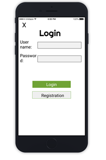

The reason why our group has chosen this project is because currently there aren't many platforms that targets specifically towards the buyer and seller for sneakers. And this project idea also relates to our group member's individual interest as sneaker collectors. This project is also able to enrich our IT skills because currently the knowledge required to create this project is beyond our skill level.
The app will support 3 different categories for different types of shoes: skate shoes, basketball shoes and runners.
Testing: Checks if products are categorized correctly.
User story: As a user, I can view and access the three different categories of sneakers.
Admin is able can upload weekly posts at the banner section of the app. Posts can be both news about various shoe brands and weekly sales.
Testing: Checks and ensure the layout of the web page to make sure posts are uploaded to to correct sections.
User story: As a user, I am able to view admin posts at the banner section of the application.
Enter the sneakers' detail page, users can choose to buy different sizes of sneakers, the price of them may have different price.
Testing: Checks if the detail page have different sizes can be chosen.
User story: As a user, I can click on the buy button, the interface display different sizes.
Users are able to post their sneakers online for sale with photos. Products can be both brand new and pre-owned.
Testing: Checks if users are able to upload products successfully with photos.
User story: As a user, I can post my sneakers on the application for sale or buy sneakers from other users.
Users are able to upload their dress up photo for sneakers.
Testing: Checks if users can navigate to dress up page and upload their photo.
User story: As a user, I can post my photo to dress up pages with a title.
Users can register an account to log in, and the system will send push messages to the registered members.
App creates a form for users and sellers to communicate about new products and news.
Testing: Checks if users could make posts in forum section.
The application is able to detect unwanted behaviors from the users such as hatred speech or racism.
Testing: Checks if the application automatically filters out selected words.
Rating systems for buyers to comment on their experience with their purchase, and the seller will have different rating ranks depending on the quality of their products.
Testing: Checks if users are able to rate sellers' products after making a purchase.